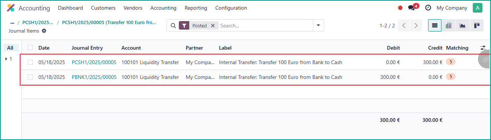

- Install the Module: Download and install the module via the Odoo Apps interface.
- Access the Payment Menu: Navigate to Invoicing/Accounting > Customers/Vendors
> Payments in your Odoo backend.

(Illustrative image: Open Payments)
-
I configured the Outstanding Receipts and Outstanding Payments accounts on the Bank/Cash Journals using the journal’s main account. As a result, when an internal transfer is confirmed, its status is automatically set to Paid.
-
Alternatively, if you configure the Outstanding Receipts and Outstanding Payments accounts using separate outstanding accounts, the internal transfer status will be set to In Process upon confirmation. Once you reconcile the outstanding account with the journal’s main account, the status will then be updated to Paid.
- Create New Payment Click New, then select Internal
Transfer. Specify the payment mode, enter the transfer amount, select transfer date ,and
select the source journal (e.g., Bank A) and the destination journal (e.g., Bank B).

(Illustrative image: Payment form with internal transfer)
- Confirm the Transfer: Click Confirm to confirm the internal transaction.
The system will automatically create the corresponding journal entries.

(Illustrative image: Send internal transfer)

(Illustrative image: Receive internal transfer)
- Review Entries:

(Illustrative image: Send Transfer Journal Entry )

(Illustrative image: Receive Transfer Journal Entry )
(Illustrative image: Internal Transfer Journal Entries Reconciliation)
- Internal Transfer Filter:

(Illustrative image: Internal Transfer Filter)
Note